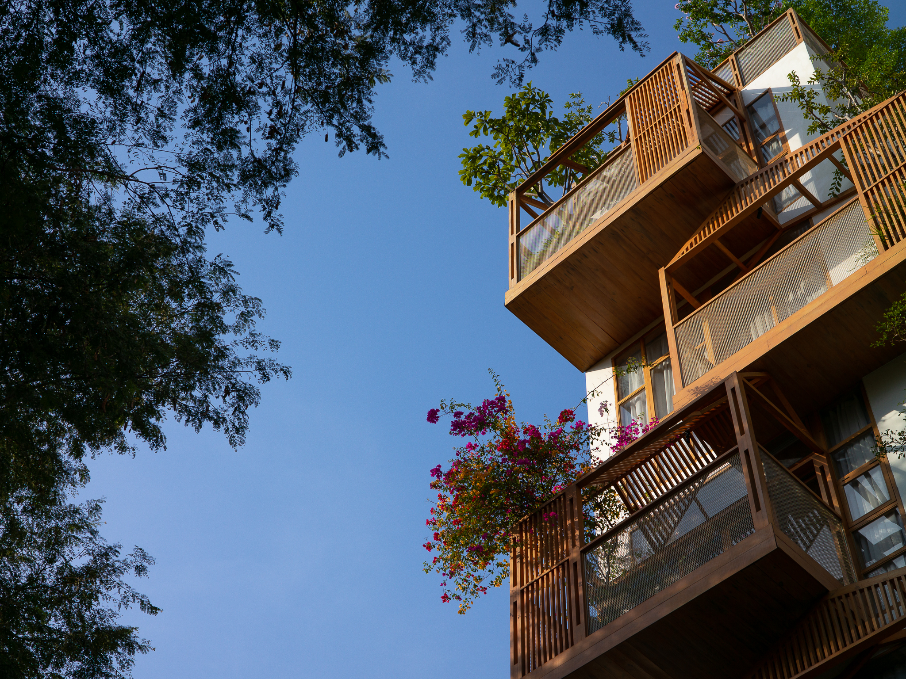

Architecture | 2023
Ariosa

Overview
BlueGreen Futures explores small-scale water-sensitive urban design interventions for vulnerable public spaces. The project uses bioswales, rain gardens, shade, seating, and community participation to reduce local flooding while improving everyday street life.
Junior Architect | KA Studio
Outcome
The design proposes a pilot public realm strategy that can be tested, maintained, and expanded over time. It treats water infrastructure as both a climate response and a social space.